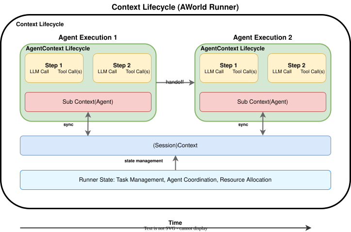

AWorld Context Management¶
Core context management system in the AWorld architecture, providing comprehensive state management through the Context component for complete Agent state information storage and coordination.
Architecture Overview¶
The Context Management system implements intelligent context processing with multiple optimization strategies based on context length analysis and configuration parameters.
Features¶
- Comprehensive context management with both global and agent-specific functionality
- Complete Agent state management with support for state restoration and recovery
- Immutable configuration management and mutable runtime state tracking
- Intelligent LLM Prompt management and context optimization
- Complete LLM call intervention and control mechanisms
- Hook system support for extensible processing workflows
- Content compression and context window management
- Multi-task state management with fork_new_task and context merging capabilities
Core Components¶
Context: Core context management class serving as both session-level and agent-level context managerPromptProcessor: Intelligent context processor supporting content compression and truncateHook System: Extensible hook system supporting full-process LLM call interventionPrompt Template: String-based prompt template system for dynamic prompt generation
Context Architecture¶

The AWorld framework implements a unified context management system with Context serving dual roles:
Context Lifecycle and Functionality¶
Context is the core context management class in the AWorld architecture, used to store and manage the complete state information of an Agent, including configuration data and runtime state.
Context serves as both a session-level context manager and agent-level context manager, providing:
- State Restoration: Save all state information during Agent execution, supporting Agent state restoration and recovery
- Configuration Management: Store Agent's immutable configuration information (such as agent_id, system_prompt, etc.)
- Runtime State Tracking: Manage Agent's mutable state during execution (such as messages, step, tools, etc.)
- LLM Prompt Management: Manage and maintain the complete prompt context required for LLM calls, including system prompts, historical messages, etc.
- LLM Call Intervention: Provide complete control over the LLM call process through Hook and ContextProcessor
- Multi-task State Management: Support fork_new_task and context merging for complex multi-task scenarios
Example: Agent State Transfer¶
📋 Test Implementation: See complete test implementation at
tests/test_context_management.py::TestContextManagement::test_multi_agent_state_trace()
class StateModifyAgent(Agent):
async def async_policy(self, observation, info=None, **kwargs):
result = await super().async_policy(observation, info, **kwargs)
self.context.context_info.set('policy_executed', True)
return result
class StateTrackingAgent(Agent):
async def async_policy(self, observation, info=None, **kwargs):
result = await super().async_policy(observation, info, **kwargs)
assert self.context.context_info.get('policy_executed', True)
return result
# Create custom agent instance
custom_agent = StateModifyAgent(
conf=AgentConfig(
llm_model_name=mock_model_name,
llm_base_url=mock_base_url,
llm_api_key=mock_api_key
),
name="state_modify_agent",
system_prompt="You are a Python expert who provides detailed and practical answers.",
agent_prompt="You are a Python expert who provides detailed and practical answers.",
)
# Create a second agent for multi-agent testing
second_agent = StateTrackingAgent(
conf=AgentConfig(
llm_model_name=mock_model_name,
llm_base_url=mock_base_url,
llm_api_key=mock_api_key
),
name="state_tracking_agent",
system_prompt="You are a helpful assistant.",
agent_prompt="You are a helpful assistant.",
)
# Run multi-agent scenario
response = self.run_multi_agent_as_team(
input="What is an agent. describe within 20 words",
agent1=custom_agent,
agent2=second_agent
)
# Verify state changes after execution
assert custom_agent.context.context_info.get('policy_executed', True)
Example: Multi-task State Management with Fork and Merge¶
📋 Test Implementation: See complete test implementation at
tests/test_context_management.py::TestContextManagement::test_multi_task_state_trace()
from aworld.core.context.base import Context
from aworld.core.task import Task
# Create parent context and task
context = Context()
task = Task(input="What is an agent.", context=context)
# Fork child context for sub-task
new_context = task.context.deep_copy()
new_context.context_info.update({"hello": "world"})
# Run task with child context
self.run_task(context=new_context, agent=self.init_agent("1"))
assert new_context.context_info.get("hello") == "world"
# Merge child context back to parent
task.context.merge_context(new_context)
assert task.context.context_info.get("hello") == "world"
Example: Hook System and LLM Call Intervention¶
📋 Test Implementation: See complete Hook system test implementations at: -
tests/test_context_management.py::TestHookSystem::test_hook_registration()- Hook registration test -tests/test_context_management.py::TestHookSystem::test_hook_execution()- Hook execution test
from tests.runners import TestPreLLMHook, TestPostLLMHook
from aworld.runners.hook.hook_factory import HookFactory
# Test hook registration and retrieval
assert "TestPreLLMHook" in HookFactory._cls
assert "TestPostLLMHook" in HookFactory._cls
# Test hook creation using __call__ method
pre_hook = HookFactory("TestPreLLMHook")
post_hook = HookFactory("TestPostLLMHook")
assert isinstance(pre_hook, TestPreLLMHook)
assert isinstance(post_hook, TestPostLLMHook)
# Test hook execution
mock_agent = self.init_agent("1")
response = self.run_agent(
input="What is an agent. describe within 20 words",
agent=mock_agent
)
assert response.answer is not None
Prompt Template¶
The AWorld framework provides a powerful prompt template system for dynamic prompt generation and management. The StringPromptTemplate class offers flexible string-based templating with variable substitution, partial variables, and Context integration.
Features¶
- Dynamic Variable Substitution: Support for f-string and Jinja2 template formats
- Context Integration: Seamless integration with AWorld Context objects
- Partial Variables: Pre-fill common template variables for reusability
- Template Combination: Combine multiple templates using the
+operator - Backward Compatibility:
PromptTemplatealias forStringPromptTemplate
Example: StringPromptTemplate Usage¶
📋 Test Implementation: See complete test implementation at
tests/test_prompt_template.py::test_string_prompt_template()
from aworld.core.context.base import Context
from aworld.core.context.prompts.string_prompt_template import StringPromptTemplate, PromptTemplate
# 1. Basic functionality test
template = StringPromptTemplate.from_template("Hello {name}, welcome to {place}!")
assert "name" in template.input_variables
assert "place" in template.input_variables
result = template.format(name="Alice", place="AWorld")
assert result == "Hello Alice, welcome to AWorld!"
# 2. Context integration
context = Context()
context.context_info.update({"task": "chat"})
context_template = StringPromptTemplate.from_template("Task: {task}\nUser: {user_input}")
result = context_template.format(context=context, task="chat", user_input="Hello!")
assert "Task: chat" in result
assert "User: Hello!" in result
# 3. Partial variables functionality
partial_template = StringPromptTemplate.from_template(
"System: {system_prompt}\nUser: {user_input}",
partial_variables={"system_prompt": "You are helpful."}
)
assert "user_input" in partial_template.input_variables
assert "system_prompt" not in partial_template.input_variables
result = partial_template.format(user_input="Hi!")
assert "System: You are helpful." in result
# 4. Template combination
template1 = StringPromptTemplate.from_template("Hello {name}!")
template2 = StringPromptTemplate.from_template(" Welcome to {place}.")
combined = template1 + template2
result = combined.format(name="Bob", place="AWorld")
assert result == "Hello Bob! Welcome to AWorld."
# 5. PromptTemplate alias
alias_template = PromptTemplate.from_template("Test {value}")
assert isinstance(alias_template, StringPromptTemplate)
result = alias_template.format(value="success")
assert result == "Test success"
Example: Dynamic Variables¶
📋 Test Implementation: See complete test implementation at
tests/test_prompt_template.py::test_dynamic_variables()
# Example 1: Basic path access with separators support
from aworld.core.context.base import Context
from aworld.core.context.prompts.dynamic_variables import get_value_by_path
def test_dynamic_variables():
context = Context()
context.context_info.update({"task": "chat"})
# Test dot separator
value_dot = get_value_by_path(context, "context_info.task")
assert "chat" == value_dot
# Test slash separator
value_slash = get_value_by_path(context, "context_info/task")
assert "chat" == value_slash
Example: Field Getter with Processor¶
📋 Test Implementation: See complete test implementation at
tests/test_prompt_template.py::test_formatted_field_getter()
# Example 2: Field getter with processor function
from aworld.core.context.prompts.dynamic_variables import create_simple_field_getter, format_ordered_dict_json
import json
def test_formatted_field_getter():
context = Context()
value = {"steps": [1, 2, 3]}
context.trajectories.update(value)
# Basic field getter
getter = create_simple_field_getter(field_path="trajectories", default="default_value")
result = getter(context=context)
assert "steps" in value
# Field getter with JSON processor
getter = create_simple_field_getter(
field_path="trajectories",
default="default_value",
processor=format_ordered_dict_json
)
result = getter(context=context)
assert json.dumps(value, ensure_ascii=False, indent=None) == result
Example: Enhanced Multi-Source Field Retrieval¶
from aworld.core.context.base import Context
from aworld.core.context.prompts.dynamic_variables import get_enhanced_field_values_from_list
# Create context with some data
context = Context()
context.context_info.update({"task": "chat", "user_id": "12345"})
context.agent_info.update({"name": "Assistant"})
# Retrieve fields from multiple sources automatically
result = get_enhanced_field_values_from_list(
context=context,
field_paths=[
"context_info.task", # From context
"current_time", # From time variables
"hostname", # From system variables
"missing_field" # Will use default
],
default="not_found"
)
# Results:
# result["context_info_task"] == "chat" # Retrieved from context
# result["current_time"] == "14:30:25" # Retrieved from time variables
# result["hostname"] == "my-computer" # Retrieved from system variables
# result["missing_field"] == "not_found" # Used default value
Available Dynamic Variables¶
The system provides two main categories of dynamic variables:
Time Variables:
- current_time: Current time in HH:MM:SS format
- current_date: Current date in YYYY-MM-DD format
- current_datetime: Current datetime in YYYY-MM-DD HH:MM:SS format
- current_timestamp: Current Unix timestamp
- current_weekday: Current weekday name
- current_month: Current month name
- current_year: Current year
System Variables:
- system_platform: System platform (Windows/Linux/Darwin)
- system_os: Operating system name
- python_version: Python version
- hostname: System hostname
- username: Current username
- working_directory: Current working directory
- random_uuid: Random UUID string
- short_uuid: Short UUID (8 characters)
Context Pre-LLM-Call optimization Configuration¶

AWorld's ContextRuleConfig provides system-level guidance for context management, inspired by Cline's rules system. It offers comprehensive context processing through configuration-based rules that control optimization and compression behavior.
OptimizationConfig¶
Controls context optimization behavior for dynamic context loading, reranking, truncation, and compression:
enabled: Whether to enable context optimization (default:False)max_token_budget_ratio: Maximum token budget ratio for context window usage (default:0.5, range: 0.0-1.0)
LlmCompressionConfig (Beta Feature)¶
⚠️ Beta Feature: This configuration is currently in beta and may undergo changes in future versions.
Controls intelligent context compression within the context rule pipeline:
enabled: Whether to enable LLM-based compression (default:False)trigger_compress_token_length: Token threshold to trigger basic compression (default:10000)trigger_mapreduce_compress_token_length: Token threshold to trigger map-reduce compression (default:100000)compress_model: ModelConfig for compression LLM calls (optional)
Example: Using Default Context Configuration (Recommended)¶
📋 Test Implementation: See default configuration test at
tests/test_context_management.py::TestContextManagement::test_default_context_configuration()
from aworld.agents.llm_agent import Agent
from aworld.config.conf import AgentConfig
# No need to explicitly configure context_rule, system automatically uses default configuration
# Default configuration is equivalent to:
# context_rule=ContextRuleConfig(
# optimization_config=OptimizationConfig(
# enabled=True,
# max_token_budget_ratio=1.0 # Use 100% of context window
# ),
# llm_compression_config=LlmCompressionConfig(
# enabled=False # Compression disabled by default
# )
# )
mock_agent = self.init_agent("1")
response = self.run_agent(
input="What is an agent. describe within 20 words",
agent=mock_agent
)
assert response.answer is not None
assert mock_agent.conf.llm_config.llm_model_name == self.mock_model_name
# Test default context rule behavior
assert mock_agent.context_rule is not None
assert mock_agent.context_rule.optimization_config is not None
Example: Custom Context Configuration¶
📋 Test Implementation: See custom configuration test at
tests/test_context_management.py::TestContextManagement::test_custom_context_configuration()
from aworld.config.conf import AgentConfig, ContextRuleConfig, OptimizationConfig, LlmCompressionConfig, ModelConfig
# Create custom context rules
mock_agent = self.init_agent(context_rule=ContextRuleConfig(
optimization_config=OptimizationConfig(
enabled=True,
max_token_budget_ratio=0.00015
),
llm_compression_config=LlmCompressionConfig(
enabled=True,
trigger_compress_token_length=100,
compress_model=ModelConfig(
llm_model_name=self.mock_model_name,
llm_base_url=self.mock_base_url,
llm_api_key=self.mock_api_key,
)
)
))
response = self.run_agent(
input="describe What is an agent in details",
agent=mock_agent
)
assert response.answer is not None
# Test configuration values
assert mock_agent.context_rule.optimization_config.enabled
assert mock_agent.context_rule.llm_compression_config.enabled
Notes¶
- Unified Architecture: Context serves as both session-level and agent-level context manager, providing comprehensive state management across the entire AWorld framework.
- Beta Features: The
llm_compression_configis currently in beta. Use with caution in production environments. - Performance Trade-offs: Enabling compression can save token usage but increases processing time. Adjust configuration based on actual needs.
- Model Compatibility: Different models have different context length limitations. The system automatically adapts to model capabilities.
- Default Configuration: The system provides reasonable default configuration. Manual configuration is unnecessary for most scenarios.
- State Management: Context supports state sharing between multiple Agents and ensures state consistency. State persistence functionality is currently under development.
- Multi-task Support: Context provides fork_new_task and merge_context capabilities for complex multi-task scenarios with proper state isolation and consolidation.
Through proper configuration of Context with context processors, you can significantly improve Agent performance in long conversations and complex tasks while optimizing token usage efficiency.